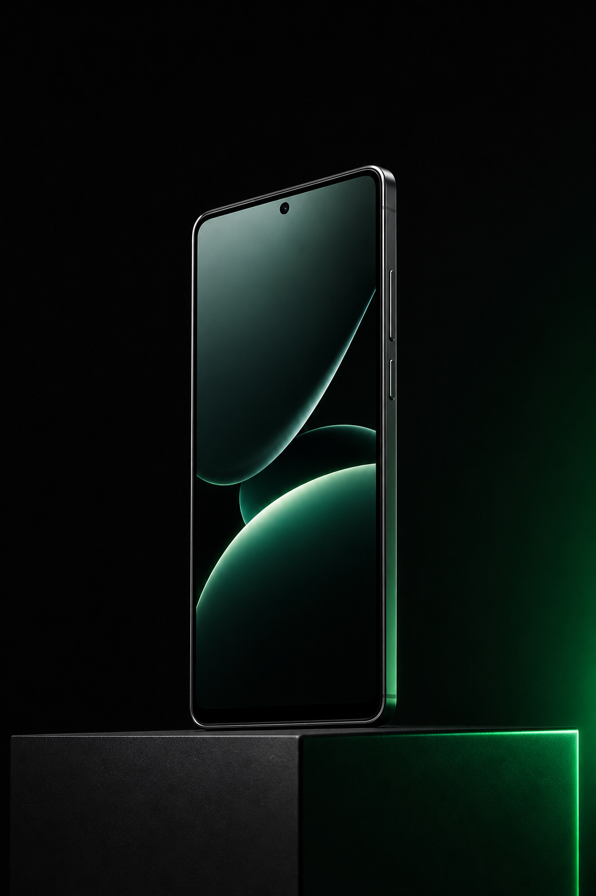
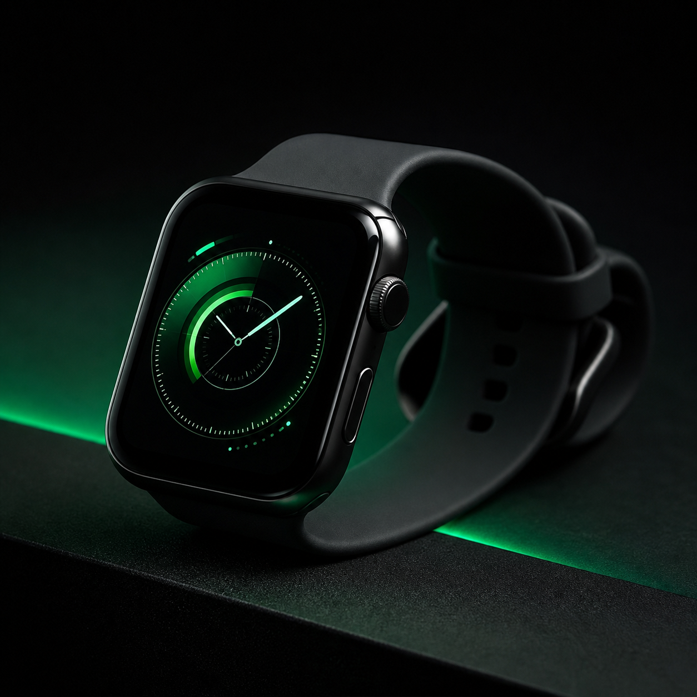

SYSTEM ONLINE
교육용 실습 산출물
아이디어를 코드로 만들고, 화면에서 직접 확인하는 실습 기록입니다.
Games 모듈 보기About
조성지 · 안드로이드 프레임워크 개발자
사용자 경험과 디바이스 플랫폼의 접점을 탐구하며, 작동하는 결과물로 배움을 기록합니다.
Projects
갤럭시 휴대폰과 갤럭시 워치 개발 프로젝트를 진행했습니다.


Experience
궁금해요? 궁금하면 연락하세요.
코드는 질문에서 시작하고, 좋은 대화에서 다음 버전이 태어납니다. 호기심은 언제나 환영입니다.
Games
방향키·WASD 또는 모바일 버튼으로 지렁이를 움직여 보세요.
Space: 일시정지 · R: 재시작 · 반대 방향 전환은 방지됩니다.
Contact
궁금한 점이나 함께 만들 이야기가 있다면 hhhrock7@gmail.com으로 연락하세요.